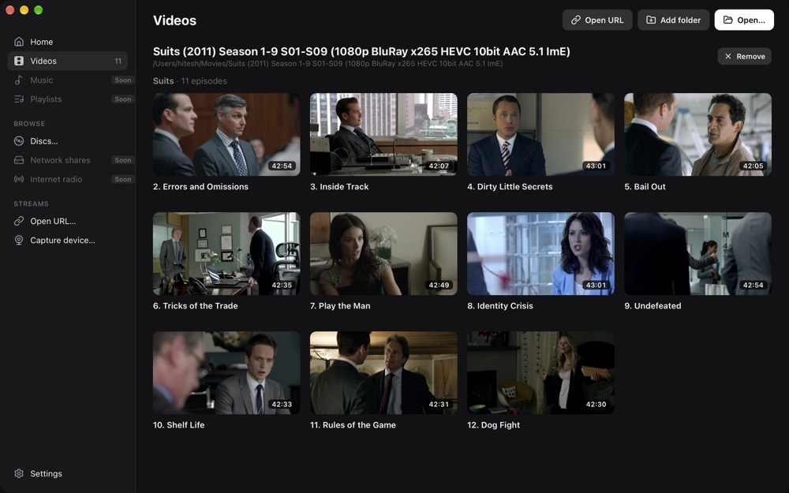
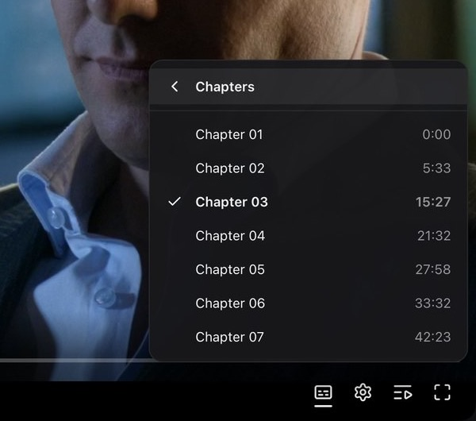
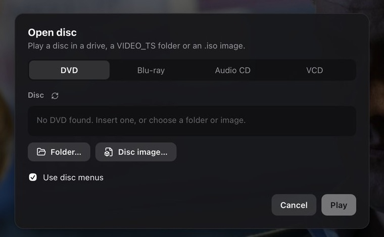

macOS
macOS 11 or later · Apple Silicon
Download .dmgNot notarised yet. The first time, right-click ReVLC in Applications and choose Open.
0.2.4 alpha · macOS and Windows
Every format VLC plays, on the same engine, with an interface that finally feels current. Free and open source.
macOS 11+ on Apple Silicon · Windows 10 and 11 (64‑bit) · Source on GitHub

Plays what VLC plays
01 · The tour
00:00
Continue watching remembers your position in every file and shows a thumbnail of where you stopped. Everything you open lands in Recently added.

05:33
Add a folder and ReVLC builds a library from it, reading show names, seasons, episode titles and durations from your files.

15:27
Speed, audio track, crop and aspect ratio, chapters, A–B loop, bookmarks, a sleep timer and deinterlacing. All in a single menu that stays out of the way until you need it.

27:58
Queue up files and drag them into order, search and sort them, or save the queue as an M3U, PLS or XSPF playlist. Shuffle, or repeat one or all.

02 · The details
See where scenes begin before you scrub, then jump straight to one from the chapter menu.

VLC's shortcuts, all editable. Press ? in the app to see them. Try them here.
Space plays and pauses
They turn on in your system language, including Blu-ray image subtitles. Style them with a live preview, and the video you're watching updates as you go.

DVD and Blu-ray with menus, audio CD, VCD, VIDEO_TS folders and disc images.

Open HTTP, HLS, DASH, RTSP and RTMP streams, or play from a webcam, microphone or your screen.
Uses your computer's video decoder for smooth, efficient playback. No codec packs to hunt down.
03 · Make it yours
Choose an accent the first time you open ReVLC, and change it any time from the sidebar. Go on, try it on this page.

04 · Under the hood
ReVLC plays media with libVLC, the open-source engine inside VLC, so decades of format support, streaming and subtitle rendering come along with it. libVLC ships inside the app; there is nothing else to install.
49 of 84 features
05 · Get it
ReVLC is licensed under GPL-3.0 and updates itself once installed. Read the code, file an issue, or help tick off the next box.
macOS 11 or later · Apple Silicon
Download .dmgNot notarised yet. The first time, right-click ReVLC in Applications and choose Open.
Windows 10 and 11 · 64-bit
Download installerNot code-signed yet. If SmartScreen warns you, choose More info, then Run anyway.